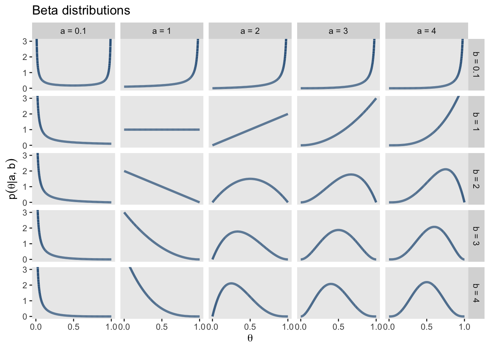

correct <- 15 # Anzahl korrekter Antworten
trials <- 20 # Anzahl Trials insgesamt14 Parameterschätzung: Einführung in die Bayesianische Statistik
Nach dem Data Cleaning und Preprocessing geht es darum, welche Informationen die Daten über den zu untersuchenden Prozess beinhalten. Anhand der Daten sollen also Rückschlüsse auf den Prozess der zu diesen Daten geführt hat geschlossen werden. Dies wird mit folgenden Schritten gemacht
Parameterschätzung: Bei der Parameterschätzung wird ein Wert des datengenerierenden Prozesses geschätzt. Sie erlaubt das Quantifizieren eines Parameters, also eines Werts, der wahrscheinlich den Daten zugrundeliegt. Beispiel: Die Schätzung eines Mittelwerts (Parameter) einer Normalverteilung.
Hypothesentests: Hypothesentests vergleichen zwei statistische Modelle. Sie erlauben eine Entscheidung, z.B. ob ein signifikanter Unterschied vorhanden ist oder nicht? Um diese Entscheidung zu treffen muss eine “Fehlerwahrscheinlichkeit” bestimmt werden. (Wie sicher will ich sein?)
14.1 Frequentistische und Bayesianische Parameterschätzung
In der Frequentistischen Statistik wird angenommen, dass ein Parameter einen wahren (aber unbekannten) Wert hat. Die frequentistische Parameterschätzung ergibt eine Punktschätzung: Der geschätzte Parameter hat damit genau einen Wert und keine Wahrscheinlichkeitsverteilung. Daher dürfen keine Aussagen über eine Wahrscheinlichkeitsverteilung des Parameters bzw. die Wahrscheinlichkeit eines Parameterswerts gemacht werden. Nur Ereignisse die wiederholt werden können eine Wahrscheinlichkeit (eine Häufigkeitsverteilung) haben.
In der Bayesianischen Statistik hingegen wird für jeden möglichen Parameterwert geschätzt, wie wahrscheinlich dieser einzelne Wert ist in Anbetracht der Vorannahmen (Priors) und der Daten. Das bedeutet, wir erhalten für jeden dieser Werte gleichzeitig auch eine Wahrscheinlichkeit mit der dieser zutrifft. Die Zusammenfassung aller geschätzten Werte und deren Wahrscheinlichkeiten wird in der Posterior-Verteilung zusammengefasst. Die Posterior Wahrscheinlichkeit beschreibt unser degree of belief, also unser aktuelles Wissen darüber, wie wahrscheinlich dieser Parameterwert wirklich hinter den Daten steckt.
Hands-on: Frequentistisch oder Bayesianisch?
Ordnen Sie die untenstehenden Aussagen dem frequentistischen bzw. dem baysianischen Ansatz zu:
“Der Mittelwert liegt mit 95%-iger Wahrscheinlichkeit zwischen 0.75 und 0.85 Sekunden.”
“Wenn das Experiment 100 Mal wiederholt wird, ist der wahre Mittelwert in 95% der Konfidenzintervalle enthalten.”
Wir schauen uns die unterschiedlichen Ansätze der Parameterschätzung im Folgenden an einem Beispiel an. Wir haben bei einer Person z.B. beobachtet, dass sie in 15 von 20 Trials korrekt geantwortet hat.
14.1.1 Maximum-Likelihood Schätzung
\(\theta\) ist der Parameterwert unter dem die beobachteten Daten am wahrscheinlichsten entstanden sind. Die beste Punktschätzung des Parameters \(\theta\), die wir machen können, wenn wir nur die Daten betrachten, und kein weiteres Vorwissen berücksichtigen, ist die Maximum-Likelihood Schätzung.
Möchten wir also z.B. schätzen mit welcher Wahrscheinlichkeit die Person beim nächsten Trial eine richtige Antwort gibt, können wir dies aus den bisherigen Trials berechnen:
\[\theta = correct / all \]
Wenn die Person in insgesamt 20 Trials 15 Mal richtig geantwortet hat, wäre die Schätzung
\(\theta = 15 / 20 = 0.75\)
theta <- correct / trials
theta[1] 0.75Wir erhalten eine Punktschätzung (einen Wert), die uns angibt mit welcher Wahrscheinlichkeit die Person beim nächsten Trial richtig antworten wird, nämlich 0.75 bzw. sie wird in 3/4 der Fälle richtig antworten.
Wenn man ganz viele Male diese Spiele wiederholen würde, dann würde man diese Messung am wahrscheinlichsten reproduzieren können, wenn man für \(\theta\) den Wert 0.75 einsetzt.
Der grosse Nachteil einer Punktschätzung ist es, dass wir keine Wahrscheinlichkeitsverteilung erhalten. Es gäbe auch noch viele andere Parameterwerte, die dieses Ergebnis von 15 korrekten Antworten in 20 Trials hervorbringen könnten, z.B. \(\theta = 0.73\) oder \(\theta = 0.78\). Diese werden bei der Punktschätzung nicht beachtet.
Um das zu veranschaulichen plotten wir die Wahrscheinlichkeit von 15 korrekten Antworten in 20 Trials für alle Werte welche \(\theta\) annehmen könnte. Diese Werte liegen zwischen 0 und 1, da wir von einer Wahrscheinlichkeit sprechen.
library(tidyverse)
# seed setzen für reproduzierbare ergebnisse
set.seed(42)
# daten generieren
d <- tibble(x = seq(from = 0, to = 1, by = .01)) |>
mutate(density = dbinom(15, 20, x))
d |>
ggplot(aes(x = x, ymin = 0, ymax = density)) +
geom_ribbon(alpha = 0.5, fill = "steelblue") +
geom_vline(xintercept = theta, linetype = 2, linewidth = 1.2) +
scale_y_continuous(NULL, breaks = NULL) +
coord_cartesian(xlim = c(0, 1)) +
labs(x = expression(paste("Geschätzter Wert von ", theta))) +
theme_minimal()Die Punktschätzung von \(\theta\) wird mit der schwarzen gestrichelten Linie dargestellt. Die hellblaue Fläche zeigt, wie wahrscheinlich die einzelnen Werte jeweils sind (hier abgebildet sehen Sie relative Wahrscheinlichkeiten).
Hands-on: Punktschätzung
Diskutieren Sie in kleinen Gruppen, wie sinnvoll es ist sich hier auf einen Wert festzulegen:
Wie genau denken Sie bildet die Punktschätzung die Realität ab?
Wie viel wahrscheinlicher ist das berechnete \(\theta = 0.75\) im Vergleich zu \(\theta = 0.70\)?
Was kann das Schätzen der Wahrscheinlichkeit für alle Parameterwerte für einen Mehrwert bringen?
Wo kann eine Punktschätzung einen Mehrwert haben?
14.1.2 Posterior-Schätzung in der Bayesianischen Statistik
In der Bayesianischen Statistik wird die Wahrscheinkeitslehre angewandt, um die Wahrscheinlichkeit von Parameterwerten zu berechnen. Es wird für jeden möglichen Parameterwert die Wahrscheinlichkeit geschätzt mit der dieser Parameterwert die Daten generiert hat. Im Gegensatz zu der Frequentistischen Statistik wird hier also nicht eine Punktschätzung vorgenommen (ein “wahrer Wert” geschätzt), sondern es wird ein Verteilung geschätzt.
Die Posterior-Verteilung beschreibt, wie wahrscheinlich verschiedene Werte eines unbekannten Parameters sind – basierend auf Vorwissen (Prior) und den beobachteten Daten.
Dass der Posterior über alle möglichen Parameterwerte integriert wird, ist eine grösse Stärke der Bayesianischen Statistik. So wird der ganze Möglichkeitsraum beschrieben. Es wird nicht nur der wahrscheinlichste Parameterwert berücksichtigt wie bei der Punktschätzung, sondern durch das Einbeziehen der ganzen Parameterverteilung können auch Nebenoptima und “fast” genauso wahrscheinliche Werte einbezogen werden.
Um die Posterior-Verteilung, also die Wahrscheinlichkeit aller Parameterwerte, zu berechnen wird in der Bayesianischen Statistik das Bayes Theorem verwendet.
Bayes Theorem
Das Bayes Theorem gibt die Formel für eine bedingte Wahrscheinlichkeit \(P(A|B)\) an.
\[ P(A|B) = \frac{P(B|A)⋅P(A)}{P(B)} \]
Das kann gelesen werden als: “Die Wahrscheinlichkeit eines Ereignisses \(A\) unter der Bedingung, dass ein Ereignis \(B\) wahr ist, ist gleich der a priori Wahrscheinlichkeit, dass \(A\) wahr ist, multipliziert mit der Wahrscheinlichkeit, dass \(B\) eintritt, wenn \(A\) wahr ist. Dividiert wird das Ganze durch die Wahrscheinlichkeit, dass \(B\) eintritt, egal ob \(A\) wahr oder falsch ist.”
Das bedeutet, um eine Bayesianische Parameterschätzung zu machen, müssen wir Vorwissen integrieren. Dies tun wir in Form einer Prior-Verteilung. Ein simple Variante ist, den Prior ist so zu wählen, dass er allen möglichen Werten dieselbe Wahrscheinlichkeit zuschreibt (wie in der Grafik unten). Diese Verteilung wird uniform genannt. Ein uniformer Prior ist aber selten empfehlenswert, da er zu breit und uniformativ ist.
Parameterschätzung

Hands-on: Bayesianische Parameterschätzung in JASP
Aktivieren Sie in JASP das Modul Learn Bayes. Wählen Sie unter Learn Bayes > Binomial Estimation mit der Einstellung Enter Sequence.
1. Modell: Stellen Sie sich vor, sie untersuchen eine Person, welche behauptet, extrasensorische Fähigkeiten zu besitzen. Diese Person behauptet, dass sie bevor eine Münze aufgeworfen wurde vorhersagen kann, auf welcher Seite die Münze landet: Kopf oder Zahl).
Wie werden die Daten verteilt sein? Welchen Parameter schätzen wir? Wie sieht das DAG aus?
Wie würden Sie die Behauptung der Person überprüfen?
2. Daten erheben: Sie werfen die Münze 20 mal und die Person macht x korrekte Vorhersagen.
Glauben Sie, dass die Person über extra-sensorische Fähigkeiten verfügt? Sind Sie skeptisch?
Unter den Dropdown Menus
Model, Prior and Posterior DistributionsundPlotsgibt es verschiedene Checkboxes. Versuchen Sie herauszufinden, was diese bewirken.
3. Vorwissen / Prior definieren.
- Wie können Sie Ihr Vorwissen in die Analyse einbeziehen? Wie verbinden Sie Ihr Vorwissen mit den beobachteten Daten?
- Welcher Prior bedeutet was (vgl. Bild unten)?
- Passen Sie Ihren Prior für \(\theta\) in JASP an.
Beta Verteilungen

14.2 Zusammenfassen von Posteriors
Der Vorteil einer Posterior-Verteilung im Vergleich zu einer Punktschätzung ist es, dass wir damit Aussagen zu der Wahrscheinlichkeit eines Parameterwertes machen können. Da Posterior-Verteilungen oft komplex sind, fassen wir sie mit Hilfe von Kennzahlen zusammen.
Typische Zusammenfassungen sind Mittelwert, Median, Modus und Intervalle (Credible Intervals). Hier einige Beispiele, zu möglichen Aussagen:
A. \(\theta\) liegt am wahrscheinlichsten bei \(X\). (Mittelwert, Median, Modus)
B. Die Wahrscheinlichkeit, dass \(\theta\) mindestens \(X\) ist, liegt bei \(P_x\).
C. Die Wahrscheinlichkeit, dass \(\theta\) kleiner als \(X\) ist, liegt bei \(P_x\).
D. Die Wahrscheinlichkeit, dass \(\theta\) zwischen \(X_{tiefer}\) und \(X_{höher}\) liegt ist \(P_x\).
E. \(\theta\) liegt mit einer Wahrscheinlichkeit von 95% zwischen \(X_{tiefer}\) und \(X_{höher}\).
F. \(\theta\) liegt mit einer Wahrscheinlichkeit von 20% ausserhalb des Bereichs zwischen \(X_{tiefer}\) und \(X_{höher}\).
Hands-on: Credible interval vs. confidence interval
Credible interval ist ein bayesianisches Konzept, das sich vom confidence interval (Konfidenzintervall) in der frequentistischen Statistik unterscheidet. Ein credible interval ist ein Intervall, das eine bestimmte Wahrscheinlichkeit enthält, dass der wahre Parameter innerhalb dieses Intervalls liegt. Dies sollte nicht mit dem Konfidenzintervall verwechselt werden. Können Sie sich daran erinnern, wie ein Konfidenzintervall definiert ist? Was ist der Unterschied zwischen einem Konfidenzintervall und einem credible interval?
14.3 Entscheidung
Anhand der Posterior-Verteilung eines Parameters kann eine Entscheidung getroffen werden. Wichtig ist hierbei, dass diese Kriterien vor dem Betrachten der Posterior-Verteilungen festgesetzt werden (analog zu den Hypothesen und Signifikanzniveaus bei frequentistischen Verfahren). Beispiele für Entscheidungskriterien sind:
Wenn 95% der geschätzen Parameterwerte über einem bestimmten Cut-off liegen, ist der Unterschied bedeutsam.
Ist der geschätzte Parameterwert mehr als 2 Einheiten von 0 verschieden, so wird auf einen Unterschied geschlossen.
aber auch:
Unterscheiden sich die Posterior-Verteilungen zweier Parameterschätzungen nicht zu mehr als 10% wird darauf geschlossen, dass kein Unterschied besteht.
Weicht der geschätzte Parameterwert weniger als 2 Einheiten von 0 ab, gibt es keinen Unterschied.
Hier zeigt sich der Vorteil der Bayesianischen Parameterschätzung: Wir können durch das Zusammenfassen der Posterior-Verteilung direkt evidence of absence testen.
Hands-on: Entscheidungen aufgrund von Posterior-Verteilungen
Wie könnten Entscheidungen aussehen bezüglich unserer Stroop oder Random-Dot Daten?
Erstellen Sie je ein Entscheidungskriterium, für das Erkennen eines Effekts und für die Abwesenheit eines Effekts.
14.3.1 Wrap-up
Zusammenfassend kann gesagt werden:
In der frequentistischen Statistik wird angenommen, dass der Parameter einen wahren Wert hat, den wir aber nicht kennen. Wir erhalten als Resultat eine Punktschätzung für den Parameter und können keine Aussage über die Wahrscheinlichkeit dieses einen geschätzten Parameterwerts machen. Der 95%-CI (confidence interval) sagt aus, dass bei Wiederholung des Experiments der “wahre” Parameterwert in 95% der Konfidenzintervalle enthalten sein wird.
In der bayesianischen Statistik wird angenommen, dass der Parameter eine Wahrscheinlichkeitsverteilung hat, die wir schätzen können. Es muss zusätzlich eine Priorverteilung festgelegt werden. Wir erhalten eine Posterior Verteilung für die Parameterwerte und können eine Aussage über Wahrscheinlichkeit eines Parameterwerts oder eines Modelles machen. Der 95%-CrI (credible interval) enthält zu 95% den “wahren” Parameterwert.
Note
In der Bayesianischen Statistik erhalten wir nach der Anwendung des Satzes von Bayes die sogenannte Posterior-Verteilung. Sie beschreibt, wie wahrscheinlich verschiedene Werte eines unbekannten Parameters sind – basierend auf unserem Vorwissen (Prior) und den beobachteten Daten.
14.3.2 Weiterführende Informationen
- Kruschke, J.K., Liddell, T.M. The Bayesian New Statistics: Hypothesis testing, estimation, meta-analysis, and power analysis from a Bayesian perspective. Psychonomic Bulletin & Review 25, 178–206 (2018). https://doi.org/10.3758/s13423-016-1221-4